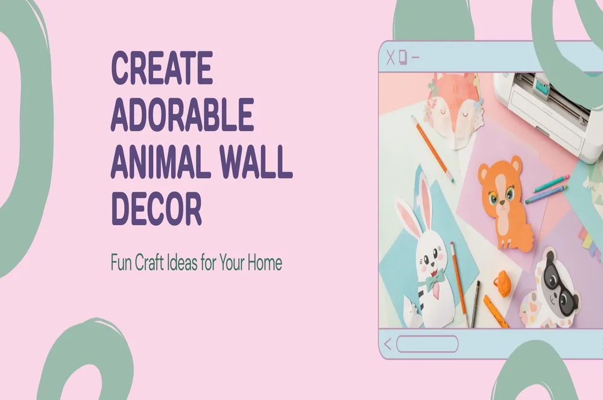
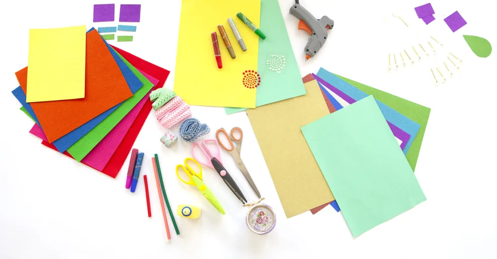

スキャンカットで動物の壁面装飾を作る方法｜🎨

「壁面装飾、毎回手作りするのって大変…」「スキャンカットがあるのにうまく活用できていない」そんなお悩みを感じていませんか？🌿
保育室や幼稚園の教室をパッと明るくする動物の壁面装飾、実はスキャンカットとSVGデータを使えば驚くほど簡単・きれい・時短に作れるんです！
このページでは、無料でダウンロードできるsvgイラストのプレゼントつきで、スキャンカットを使った壁面装飾の作り方をまるっとご紹介します。ぜひ最後まで読んでみてくださいね✨
🌟 スキャンカットで壁面装飾を作るメリット
スキャンカットと※SVG（またはPNG）データを組み合わせると、壁面装飾づくりが格段に楽になります。具体的なメリットをご紹介します！
※SVGとは？
SVG（Scalable Vector Graphics）とは、どんなサイズに拡大・縮小しても画質が劣化しないデータ形式のことです。スキャンカットやCricut・Silhouetteなどのカッティングマシンに直接読み込んで使えるのが最大の特徴です✨
一方、PNGは写真やイラストでよく使われる画像形式で、拡大すると画質が荒くなることがあります。印刷やSNS投稿に向いていますが、カッティングマシンへの直接読み込みはできません。
📌 まとめるとこんなイメージ！
・SVG＝カッティングマシンで切る用・拡大縮小しても劣化なし → Etsyで購入
・PNG＝印刷・SNS投稿などに使う用・無料でダウンロードOK → miponoe.comで無料配布中
- ⏱️ 時短になる｜手描きやハサミ不要。データを読み込むだけで正確にカットできます
- ✂️ 仕上がりがキレイ｜細かいパーツも機械がなめらかにカット。プロ品質の仕上がりに
- ♻️ 繰り返し使える｜データを保存しておけば何度でもOK。季節ごとに大活躍
- 🎨 好きな色で作れる｜お好みの色画用紙やクラフト紙でアレンジ自由
💡 こんな方におすすめ！
・保育士・幼稚園の先生で、季節の壁面を時短で作りたい方
・スキャンカットを買ったけど活用できていない方
・かわいい動物イラストでお部屋を飾りたいママさん
🛒 用意するもの｜必要な材料リスト
壁面装飾を作るために必要なものはこちらです。ほとんどが100円ショップや文具店で揃えられますよ🎉
| アイテム | 詳細・ポイント | 必須？ |
|---|---|---|
| スキャンカット本体 | SDX・CMC・SDシリーズどれでもOK | ✔ 必須 |
| カッティングマット | スタンダード（粘着あり）がおすすめ | ✔ 必須 |
| 色画用紙・クラフト紙 | 好きな色を複数枚用意すると楽しい♪ | ✔ 必須 |
| SVGデータ | Etsyで購入 or miponoe.comから無料PNG取得 | ✔ 必須 |
| 両面テープ・のり | パーツを貼り合わせるのに使用 | あると便利 |
| ラミネートフィルム | 耐久性アップ。繰り返し使う場合におすすめ | あると便利 |

📥 SVGデータの使い方｜miponoe.comからダウンロードする方法
miponoe.comでは、かわいい動物イラストのPNGデータを無料でダウンロードできます。スキャンカットで使えるSVGバンドルはEtsyで販売中です🎁
- miponoe.com にアクセス｜ダウンロードページから動物イラストのPNGを無料取得
- スキャンカットにデータを転送｜USBまたはBluetoothで転送。Canvas Workspaceが便利です
- 色画用紙をセットしてカット｜カッティングマットにセットしてカットスタート！
- パーツを貼り合わせて完成🎉｜のりや両面テープで貼り合わせれば動物壁面装飾のできあがり
さらにプロフェッショナルな仕上がりをお求めの方には、Etsyで販売中のSVGバンドルがおすすめです。Cricut・ScanNCut・Silhouette対応で、商用利用もOK！
🆚 無料PNG vs 有料SVGバンドル｜違いを比較
「PNGとSVGって何が違うの？」という方のために比較してみました！
🆓 PNG（無料）
- miponoe.comから無料取得
- 透過背景で使いやすい
- 印刷・個人利用OK
- スキャンカット直接読み込み不可
- まず試したい方に最適！
⭐ SVGバンドル（有料・Etsy）
- Etsyで$9.99〜
- SVG＋PNG＋EPS全形式セット
- スキャンカット直接読み込みOK
- SVGは拡大縮小しても劣化なし!
- 商用利用OK
🎁 無料PNG動物イラストをダウンロードしよう
まずは無料SVGイラストで動物の壁面装飾づくりをスタートしてみてください🌿
さらにクオリティを上げたい方・まとまったSVGデータで直接カットしたい方はEtsyのSVGバンドルをチェックしてみてください。商用利用OKなのでハンドメイド販売にも使えます🎉
📸 作った壁面装飾はInstagramで #miponoe をつけてシェアしてください！@miponoe_ でお待ちしています🎨